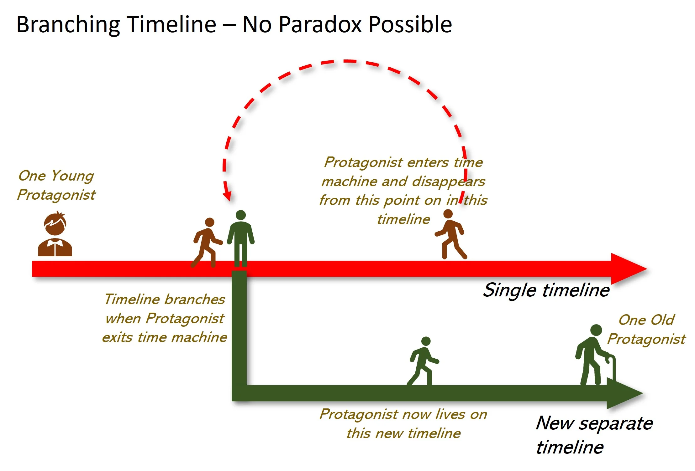

Time Paradoxes: Exploring the Enigma of Temporal Contradictions

Time paradoxes, often the cornerstone of science fiction, delve into the tantalizing and puzzling contradictions that arise when the concept of time travel intersects with causality, logic, and physics. These paradoxes challenge our understanding of time and reality, offering a glimpse into the fascinating complexities of theoretical science and philosophy.
What Is a Time Paradox?
A time paradox occurs when actions involving time travel create inconsistencies or contradictions in the timeline. These paradoxes highlight the intricate interplay between cause and effect, suggesting that altering past events can lead to logical dilemmas or impossible scenarios.
Famous Time Paradoxes
The Grandfather Paradox
The Predestination Paradox
The Bootstrap Paradox
Theoretical Approaches to Time Paradoxes
Physicists and philosophers have explored various theories to address the logical conundrums posed by time paradoxes:
The Many-Worlds Interpretation:
This theory suggests that changes made to the past create alternate timelines or parallel universes, allowing the original timeline to remain intact. This approach avoids paradoxes by decoupling the cause-and-effect relationship between timelines.
Self-Consistency Principle:
Proposed by physicist Igor Novikov, this principle posits that actions taken by a time traveler are already part of the timeline's history, ensuring that events remain consistent and paradox-free.
Chronology Protection Conjecture:
Stephen Hawking theorized that the laws of physics might prevent time travel to the past, thereby safeguarding the timeline from paradoxes.
Time Paradoxes in Popular Culture
Time paradoxes have captivated audiences in films like Back to the Future, where meddling with the past has unforeseen consequences, and Interstellar, which explores the effects of time dilation and causality. These stories blend speculative science with emotional depth, making time paradoxes both intellectually stimulating and deeply human.
Why Do Time Paradoxes Matter?
Beyond their entertainment value, time paradoxes invite us to ponder profound questions about the nature of time, causality, and existence. They challenge our assumptions and spark creativity, driving scientific inquiry and philosophical debate.
Time paradoxes remind us that while time may seem linear and immutable in our daily lives, the deeper truths about its nature remain one of the greatest mysteries of the universe. Perhaps this is why they continue to captivate our imagination—offering endless possibilities, contradictions, and a chance to dream of realities beyond our grasp.
< < >